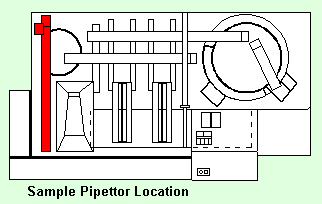
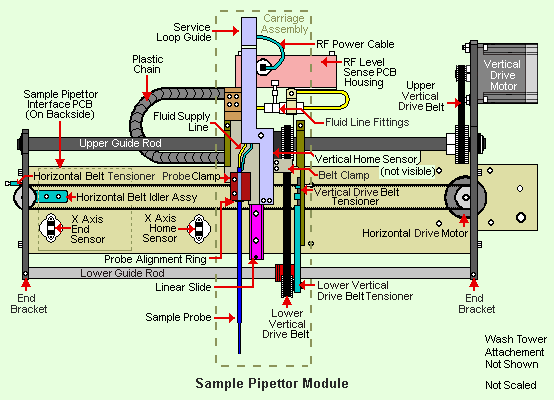
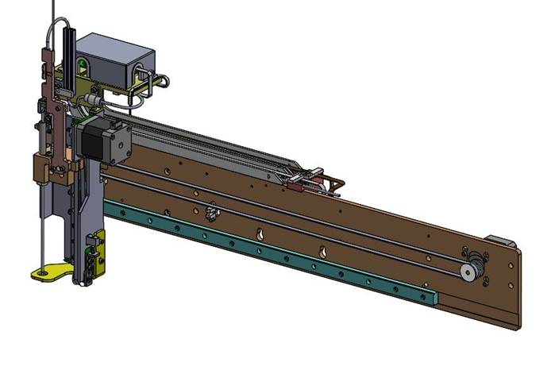
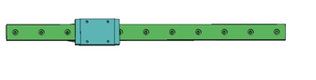
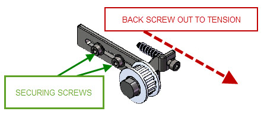

Sample Pipettor Operating Principles
Purpose
This document details the operating principles for the sample pipettor.
Module Function
- Acquires sample from sample containers loaded into sample racks.
- Moves sample to the sample storage module.
- Allows rapid release of sample racks by quickly removing required sample from the sample racks into sample storage.
Location

Operational Overview
| Step | Action |
|---|---|
| 1 | After an initial probe wash in the sample probe wash tower, the sample pipettor is moved to the SPU presentation area to aspirate sample. |
| 2 | The sample pipettor moves to a predetermined alignment position above the container in the sample rack, and then lowers to detect the surface of the sample fluid.
Note: An in-line pressure sensor monitors the pressure on the fluid line from the sample pump during aspiration.
|
| 3 | The sample pipettor Z-axis carriage moves upward to the home position. |
| 4 | The sample storage module moves an empty sample vessel into position to receive sample from the sample pipettor. The sample pipettor moves horizontally to a location directly above the sample storage module. |
| 5 | The sample pipettor carriage lowers the sample probe a predetermined number of steps into the empty sample vessel (SV) in the sample storage module. The sample pump dispenses sample fluid into the SV.
Note: Fluid pressure is monitored during this process.
|
| 6 | After the sample is dispensed, the sample pipettor Z-axis carriage moves upward to the home position. |
| 7 | The sample pipettor moves to a location directly over the sample probe wash tower. |
| 8 | The sample pipettor Z-axis carriage moves the probe downward into the wash tower, where it is washed. After washing, the sample pipettor z-axis carriage moves upward to its home position. |
| 9 | The sample pipettor is ready to repeat these steps or move to the horizontal home position to wait until it is needed again. |
Non-Linear Slide Sample Pipettor Component Locations

Component Functions
| Component | Description and Function |
|---|---|
| Belt (Upper Vertical, Lower Vertical, and Horizontal) | The three belts in this module, although all are of different lengths, transfer motor motion to move the sample pipettor carriage. |
| Cable, RF Power | A shielded cable that provides an electrical path between the sample probe and RF level sense PCB. The center conductor is soldered to the outside of the sample probe near the top and is part of the probe assembly. |
| Carriage Assembly | The part of the sample pipettor module that moves vertically and horizontally to aspirate and dispense reagents and sample fluid. |
| Chain, Plastic (two) | A flexible housing for the cable and tubing that route to the sample pipettor carriage. This module has two chains, positioned side by side.
|
| Clamp, Belt | Attaches the lower vertical drive belt to the sample pipettor carriage. |
| Gantry | This term applies to the entire sample pipettor module, but specifically a gantry is a device that can move both horizontally and vertically to perform its function. |
| Guide, Service Loop | Grooved metal parts that control the vertical movement position of the fluid supply line and RF power cable as the sample pipettor carriage moves vertically. |
| Idler Assembly (Vertical and Horizontal Axis) | The pulleys around which the motion belts are routed. These pulley or block assemblies are moveable.
Note: See tensioner.
|
| Motor, Horizontal Drive | Provides power to move the sample pipettor carriage horizontally. |
| Motor, Vertical Drive | Provides power to move the sample pipettor carriage vertically. |
| PCB, Interface | Provides power and signal connections for the sample pipettor module. |
| PCB, RF Level Sense | Provides power and sensing for the sample probe to detect a fluid surface. |
| Probe, Sample | The sample probe consists of a continuous plastic tube within a metal outer sheath. The tube fits tightly into the sheath to prevent fluid from entering the area between the tube and sheath. The tubing and sheath both have very low friction and low affinity for fluids to allow easy cleaning. The sheath is connected to an RF circuit that detects a change in the feedback loop when disturbed. |
| Rod, Guide | The round metal shafts that allow horizontal movement of the sample pipettor carriage. The upper guide rod is black. The lower guide rod is silver. |
| Sensors |
This module has three sensors:
|
| Slide, Linear | A type of bearing that allows a low friction linear movement path for a mechanical device. In the sample pipettor module, the sample pipettor carriage is attached to this bearing and provides a vertical path for moving the pipettor carriage. |
| Service Loop, Horizontal | The RF signal cable, ground cable, and fluid supply line contained in the horizontal chain and routed to the sample pipettor carriage. Because of the carriage movement the cable and supply tubing cannot be routed directly to the carriage. |
| Service Loop, Vertical | The RF signal cable, ground cable, and fluid supply line contained in the vertical chain and routed to the sample pipettor carriage. Because of the carriage movement the cable and supply tubing cannot be routed directly to the carriage. |
| Tensioner, Belt (Vertical or Horizontal) | A block and pulley assembly that can be adjusted mechanically to loosen or tighten the vertical and horizontal motion belts. |
Y Axis Linear Slide Sample Pipettor Component Locations

The Y Axis Linear Slide sample pipettor performs the same as the previous version but features a few re-engineered components.
| Component | Description and Function |
|---|---|
|
Y Axis Linear Slide  |
The Y Axis linear slide replaces the guide rods that supported the pipettor Y movement. |
|
Spring Tensioning Idler for Y and Z belt tensioning  |
The spring tensioned Y and Z idler will provide uniform tension for the drive belts. To tension the belt (see picture):
To remove the belt, perform the same steps, but drive the tensioning screw toward the bracket (compressing the spring). |
|
Cable addition for the Z Motor components 
|
The Z Motor Loop Cable was added to the chain to provide a quick disconnect from the Z Motor. This can eliminate the need to remove the cabling from the chain during a component change. |
Interacting Devices
- Sample presentation unit (SPU)
- Sample storage module
- Sample pipettor wash tower
- Fluidics module
RF Level Sense Process
Refer to the SP: RF Level Sense Operating Principles document.